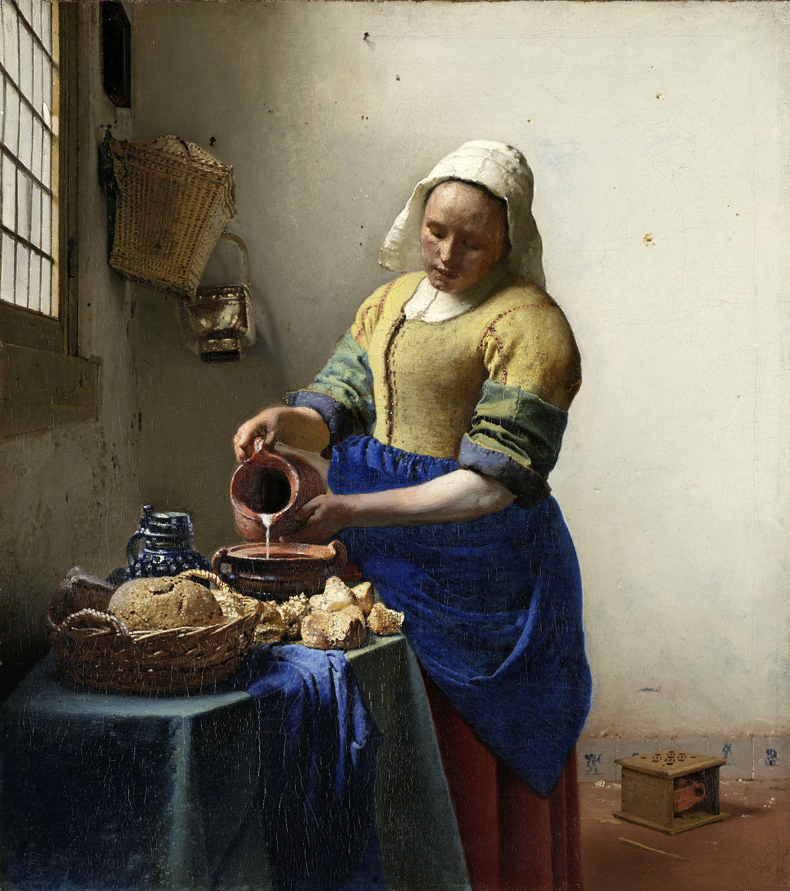

The Milkmaid (Vermeer)
Descript : Milkmaid (Dutch: De Melkmeid or Het Melkmeisje), sometimes called The Kitchen Maid,
is an oil-on-canvas painting of a "milkmaid", in fact, a domestic kitchen maid,
by the Dutch artist Johannes Vermeer. It is now in the Rijksmuseum in Amsterdam,
the Netherlands, which regards it as "unquestionably one of the museum's finest attractions"